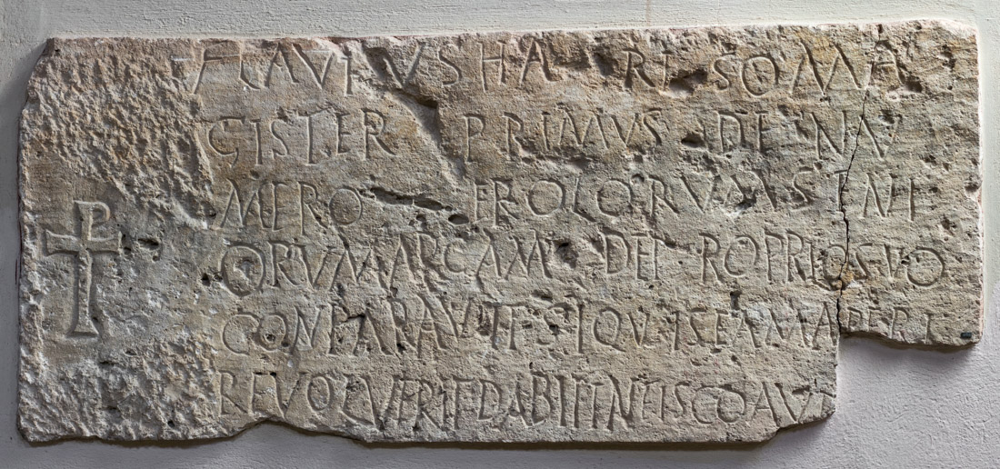

The Inscription of Hariso
PHYSICAL DESCRIPTION
- Type
- Lateral panel of the sarcophagus.
- Material(s)
- Limestone.
- Execution
- Inscribed.
- Dimensions
- 47 × 110 cm
- Epigraphic Field
- 47 × 110 cm
- Letters Height
- 4-6 cm
Palaeographic comment
Dextrorse direction, horizontal alignment, vertical module, irregular ductus, left-aligned layout.
A occasionally with a broken crossbar.
G without a horizontal bar, featuring a tail that extends below the baseline.

INSCRIPTION
INTERPRETATIVE TRANSCRIPTION
Flavius Hariso, ma
=
gister primus de nu
=
mero Erolorum (!) seni
=
orum, arcam de proprio suo
conparavit (!). Si quis eam aperi
=
re voluerit, dabit in fisco auṛi
p(ondo) duo.
TRANSLATION
Flavius Hariso, magister primus of the numerus of the Heruli seniores, purchased the arca with his own funds.
Whosoever should wish to open it shall pay two (Roman) pounds of gold to the fiscus.
PEOPLE
Flavius Hariso
- NOMEN
- Flavius
- COGNOMEN
- Hariso
- GENS
- Flavia
- ORIGIN (of the name Hariso)
- germanic
- GENDER
- male
- OCCUPATION
- soldier
- RANK
- magister primus
- NUMERUS
- Heruli Seniores
- ROLE
- dedicator/deceased
Bibliography
| Bertolini 1876a, 87, n. 5. |
| CIL V 8761 |
| ILS 2801 |
| ILCV 481 |
| Hoffmann 1963, 43, n. 23. |
| Lettich 1983, 85-86, n. 43. |
- EDR
-
EDR097748
- Author of the record:
- Damiana Baldassarra
- Date:
- 26-11-2007
COMMENTARY
Flavius Hariso was the magister primus of the Heruli seniores. The specific function of the magister primus remains unclear, as the term is poorly attested. According to Grosse, he may have been a military instructor, comparable to the magister campi legionis, magister equitum legionis, magister cohortis, or magister numeri (Grosse 1920, 24). As reported by Bertolini, his sarcophagus was among the largest, measuring 2.3 meters in length—a detail suggesting significant financial means and, consequently, a prestigious rank (Bertolini 1876a, 87, n. 5). However, the pecuniary penalty of two Roman pounds of gold is comparable to that of other common soldiers and non-commissioned officers.
The burial of Flavius Hariso was located near two sarcophagi belonging to Victurinus and Flavius Launio, both members of the Batavi seniores. This proximity to members of the Batavi is not surprising: historiography and primary documents attest to a close connection between these two contingents, which frequently fought together. Ammianus Marcellinus provides several examples in his work: in 360 AD, the two units were sent together to Britain under the command of Lupicinus (Amm. 20, 1), Julian's magister equitum. In the same year, Constantius II requested the dispatch of certain Western troops for his Persian campaign, specifically including the Batavi and the Heruli (Amm. 20, 4). In 365 AD, under the reign of Valentinian I, the Heruli and Batavi lost their standards to the Alamanni (Amm. 27, 1).